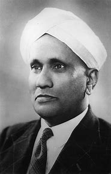

1888-1970
"Ask the right questions, and nature will open the doors to her secrets"
Sir Chandrasekhara Venkata Raman FRS (7 November 1888 – 21 November 1970) was an Indian physicist known for his work in the field of light scattering.Using a spectrograph that he developed, he and his student K. S. Krishnan discovered that when light traverses a transparent material, the deflected light changes its wavelength and frequency. This phenomenon, a hitherto unknown type of scattering of light, which they called "modified scattering" was subsequently termed the Raman effect or Raman scattering. Raman received the 1930 Nobel Prize in Physics for the discovery and was the first Asian to receive a Nobel Prize in any branch of science.